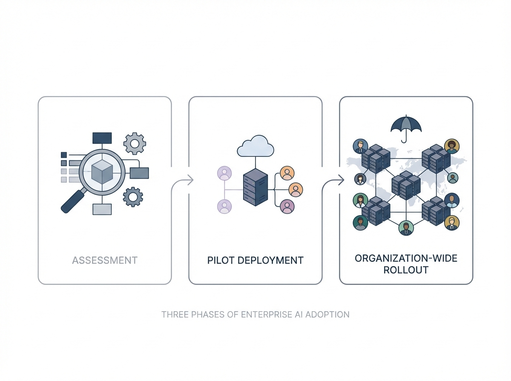
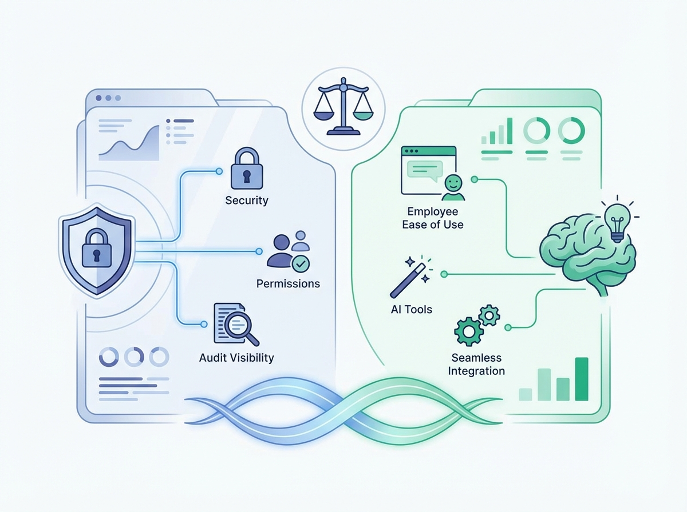
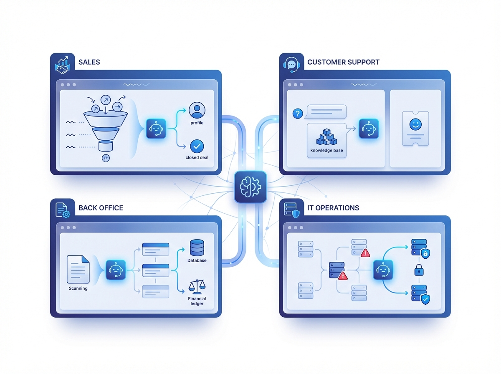
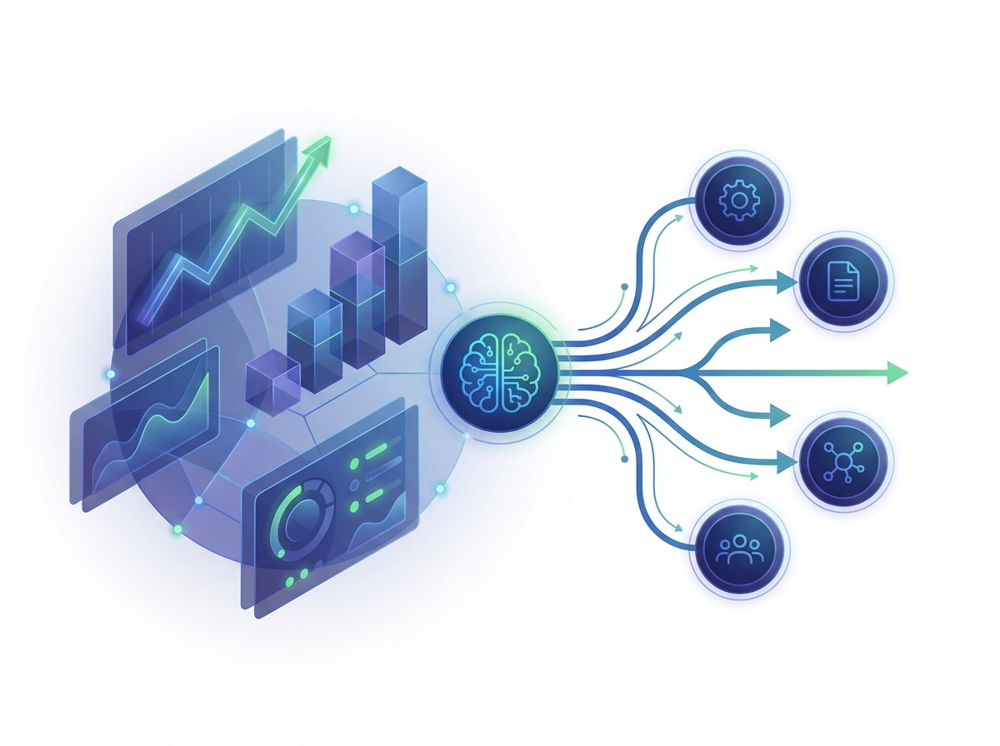

経営 / 役員
- どこから始めれば成果につながるか見えない
- 投資対効果の説明が難しい
- 部署ごとの試行が全社資産にならない
OpenClawの企業導入を、診断・設計・PoC・定着・横展開まで伴走。
重要なのは機能比較ではなく、どの業務から始めるか・どう安全に使うか・どう成果を測るかを先に決めることです。
無理な営業は行いません。検討初期でもご相談いただけます。
経営・情シス・現場の論点を同時に整理しないと、PoCは進んでも本番運用で止まります。
支援内容はシンプルです。診断して、1部署で成果を作り、再現できる形で広げる。そのための3フェーズを設計します。

OpenClaw導入支援の価格は、単なる設定代行ではなく、業務選定・統制設計・定着化・成果検証まで含めるから成り立ちます。
Slack / Notion / Google Workspace / CRMなど、どこまで業務とつなぐか。
承認、監査、権限分離、ログ要件の重さで設計工数が変わります。
研修、運用レビュー、改善提案まで含めて初めて使われる状態になります。


入口は小さく、本番は十分に。値引きではなく、スコープ調整で最適化する前提の料金設計です。
30万〜60万円
80万〜150万円
150万〜300万円
300万〜800万円
単価を下げるのではなく、対象部門・接続先・研修範囲・定例頻度を調整して提案します。
無料相談
現状診断
対象業務 / KPI設計
PoCまたは初期導入
定着支援 / 効果検証
部門展開 / 運用高度化

問題ありません。無料相談や導入診断で、業務内容・体制・セキュリティ要件を踏まえて、向いている始め方を整理します。
可能です。最初は成果が見えやすい1部署・1業務から始めるほうが、社内展開しやすくなります。
要件次第で対応可能です。権限設計、利用ルール、承認・監査の論点整理を含めて支援範囲を設計します。
入口の診断は30万〜60万円、PoCは80万〜150万円、本番導入は150万円以上が目安です。高統制案件は300万円以上の部門展開プランが中心です。
あります。月次レビュー、改善提案、新規ユースケース追加など、定着と成果化のための伴走支援をご用意しています。
AI活用の成否は、ツール選定だけでは決まりません。
どの業務から始めるか、どう安全に使うか、どう成果を測るか。
その初期設計を、60分で一緒に整理します。
ご相談で整理できること